Personal Logo | Sketch to SVG
This is a classroom draft. Test the steps with students and record anything that needs revision.
Make your mark
Draw a simple personal mark on paper, take a clear photograph or scan, and use that image as a tracing reference in Photopea. The finished logo should use your initials, two or three meaningful shapes, or both.
Choose what you need
Student: complete the lesson online
Stay on this webpage. It contains the complete sequence, examples, and Photopea screenshots.
Teacher: edit or assign the worksheet
Use the Google Doc when you want to adapt the wording, add class instructions, or assign a digital copy.
Print a handout for drawing
Use this two-page PDF when students will analyse the example and sketch three logo ideas by hand.
Follow the Photopea steps separately
Use the Google Doc on a screen, or print the PDF. Both contain the same step-by-step screenshots.
Photopea guide in Google Docs Print the Photopea guide (PDF)
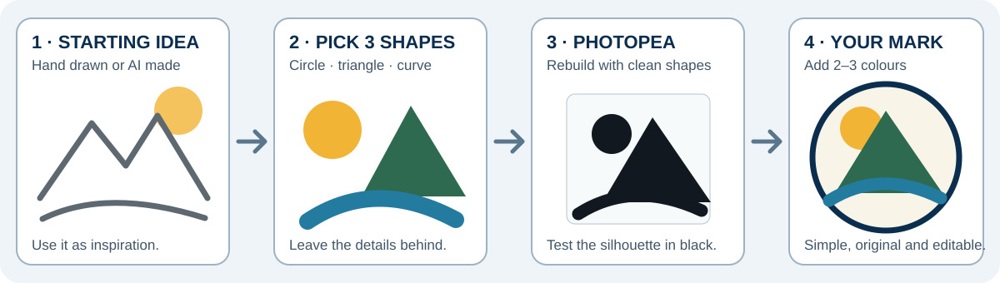
1. Start with an idea
- Think of a place, object, activity, or set of initials that represents you.
- Draw it quickly on plain white paper with a dark pencil or marker.
- Circle two or three shapes that carry the meaning.
- Leave small details behind. You will trace the useful structure, not every pencil mark.
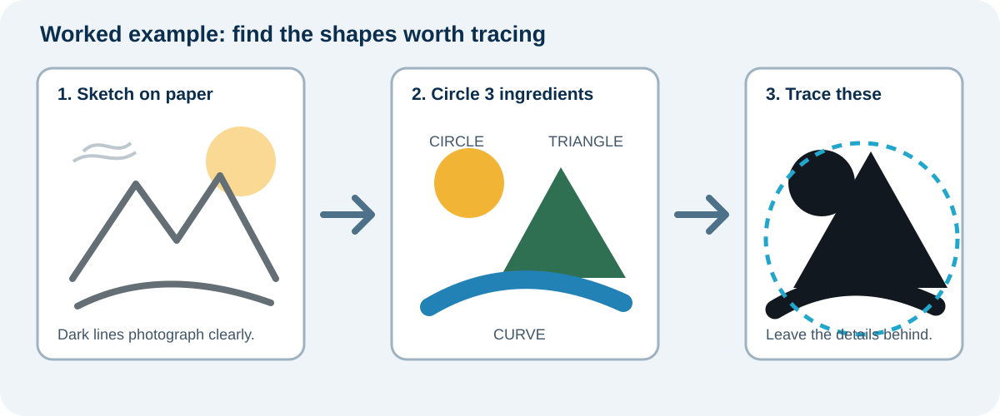
Example: The landscape sketch contains many marks, but the logo only needs a circle for the sun, a triangle for the mountain, and one curve for the river.
2. Sketch three different ideas
Use the worksheet and draw three quick possibilities. Change the idea, not only the size.
- Initials only: combine or overlap your letters.
- Shapes only: use the strongest shapes from your paper sketch.
- Initials + one shape: connect one meaningful shape to your letters.
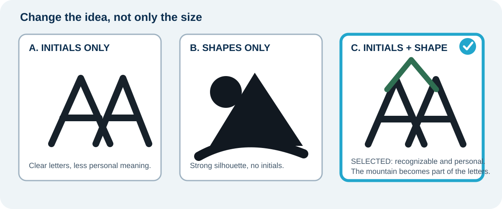
Choose the idea that is easiest to recognize in one second. A clear silhouette is more useful than extra detail.
3. Know the file types


Your photograph or scan is a raster reference. You will trace it with clean Photopea shapes and export an SVG master. Keep a transparent PNG copy for the name tag.
4. Trace and rebuild the sketch in Photopea
The six screenshots below are the complete visual walkthrough from the Google Doc. The Photopea advertising rail has been cropped out so every image focuses on the student action.
Keep this webpage or the separate Photopea guide beside the editor. Stop after each image and compare your screen with the checkpoint before continuing.
Step 1 - Create a square logo file
- Open Photopea and choose File > New.
- Set Width: 1000 px, Height: 1000 px, and Background: Transparent. Select Create.
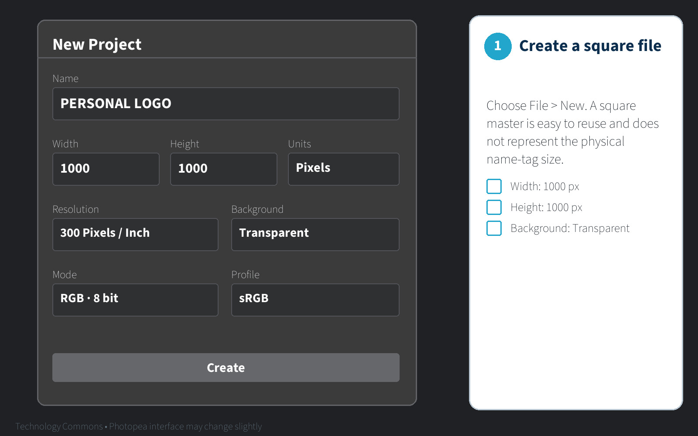
Use pixels for this scale-free logo master because it does not represent the physical name-tag size. You will use inches when you place the logo on the 11 × 4 inch name-tag canvas.
Step 2 - Place your photograph or scan
- Photograph the sketch straight on in bright, even light, or scan it.
- Choose File > Open & Place and select the image.
- Hold the aspect ratio lock and resize the sketch to fill most of the square.
- In the Layers panel, rename the placed layer
REFERENCE.
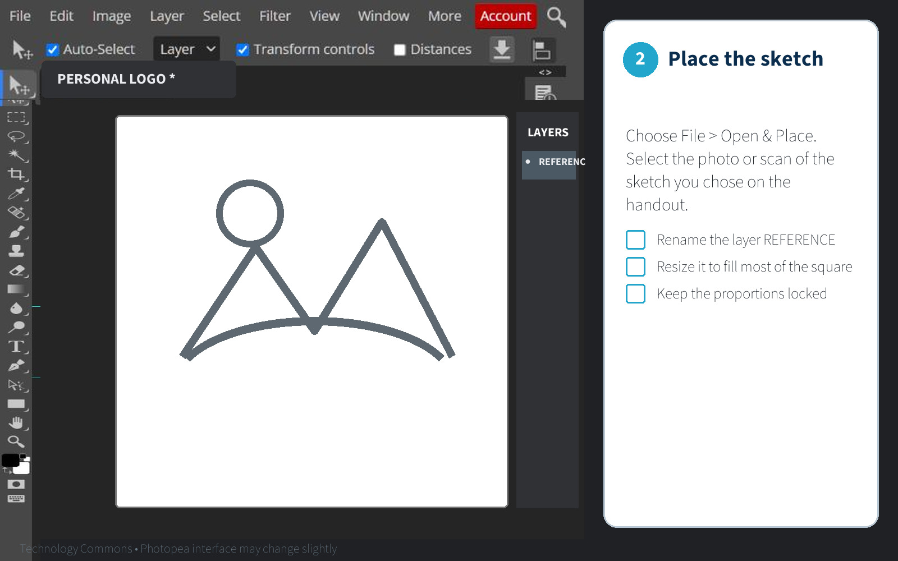
Step 3 - Fade and lock the reference
- Select the
REFERENCElayer. - Set its Opacity to 30%.
- Select the lock icon so the photograph cannot move.
- Never draw on the
REFERENCElayer.
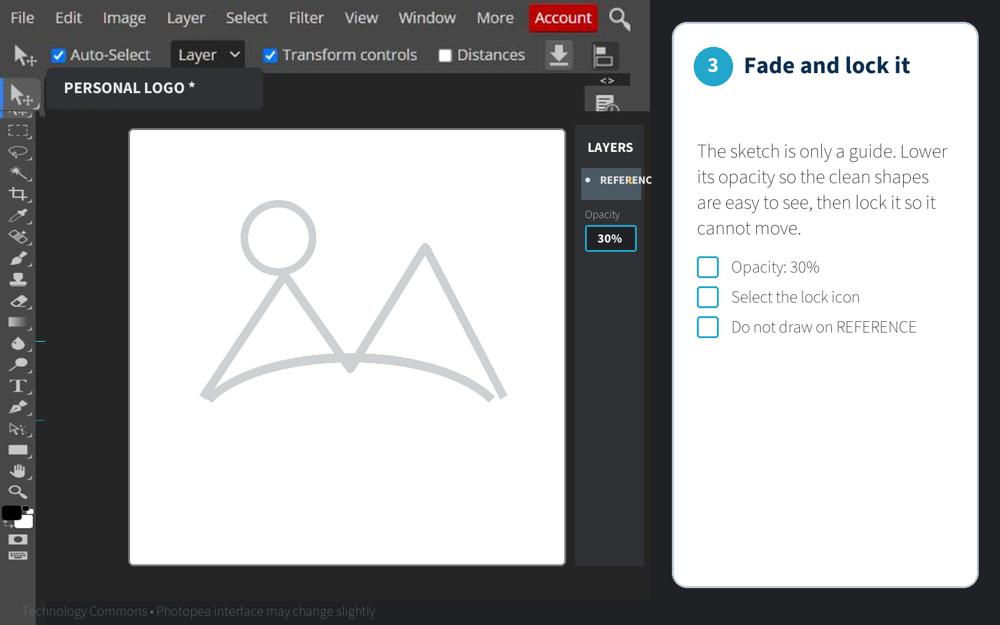
Step 4 - Trace with clean shapes
- Select New Layer and name the first part, such as
SUN,MOUNTAIN,RIVER, orINITIALS. - Press U for a Shape tool. Set Fill to black and Stroke to none. Draw circles, rectangles, or polygons over the photograph.
- Press P for the Pen tool when you need a custom shape. Click for straight corners. Click and drag only for curves. Close the path by clicking its first point.
- Press T for the Type tool if your logo uses initials. Choose a bold, readable sans-serif font and keep the text editable while you test.
- Press V for the Move tool. Use Ctrl+T to resize, rotate, or move the selected part. Keep the proportions locked.
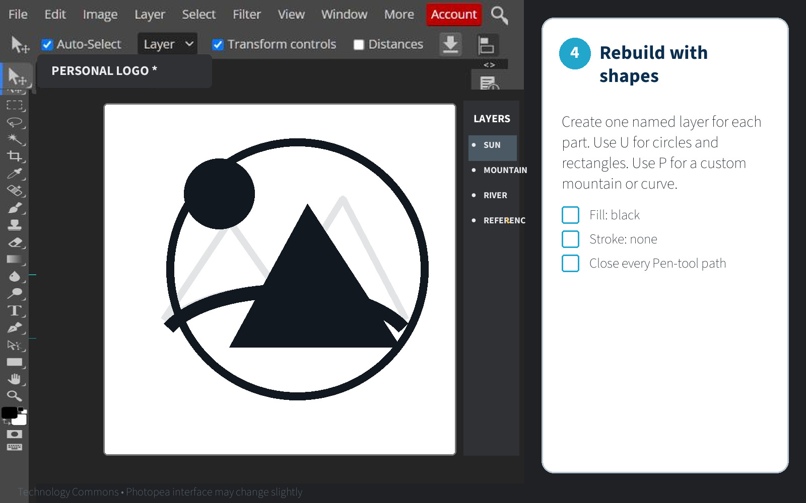
Keep one editable text layer. Duplicate it before choosing Convert to Shape. Never convert your only editable text layer.
Crop it, increase the contrast, and trace only the strongest edges. Image > Vectorize Bitmap can give you a starting point, but remove bumps, tiny pieces, and unwanted holes afterward.
Step 5 - Hide the photograph and run the black test
- Hide
REFERENCEby selecting its eye icon. - Group or clearly name the traced layers.
- Zoom out until the mark appears about 25 mm wide on screen.
- Remove anything that disappears, closes up, or becomes confusing.
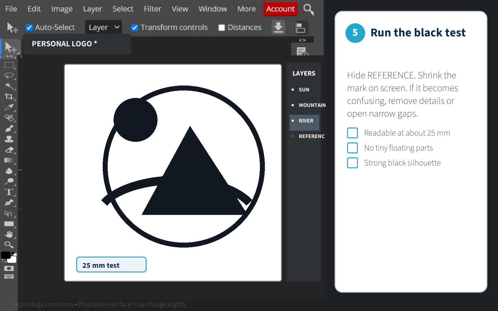
5. Add simple colour
Add colour only after the black silhouette works. Use two or three colours at most: one main colour, one supporting colour, and an optional accent.
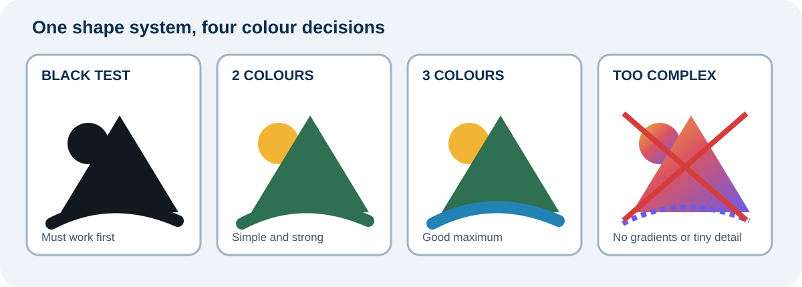
- Keep strong light-dark contrast.
- Keep a black version for engraving.
- Avoid gradients and tiny coloured details in the first version.
- Do not use colour to repair an unclear silhouette.
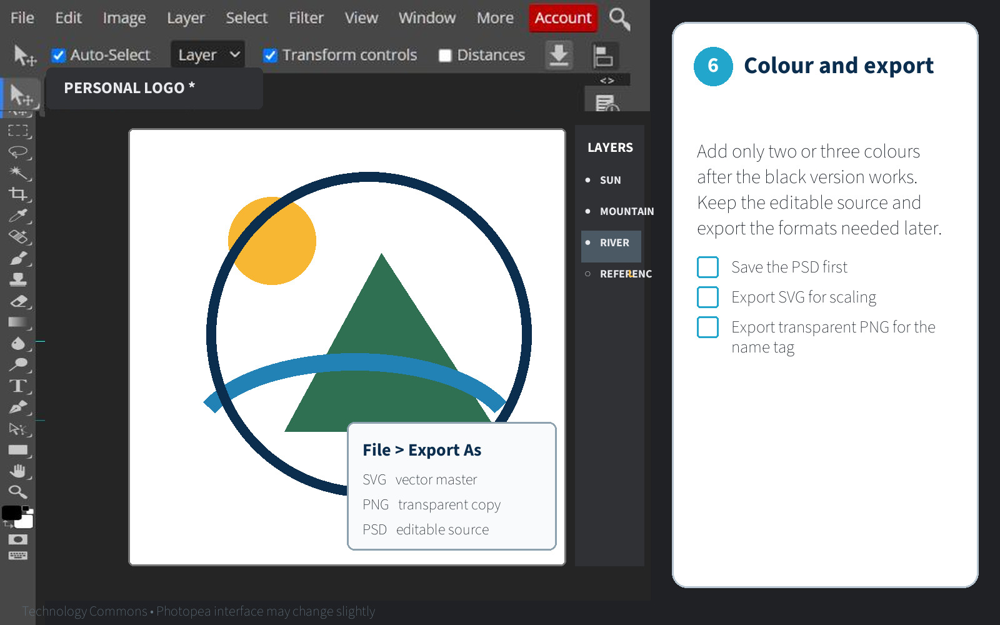
6. Run four quick tests
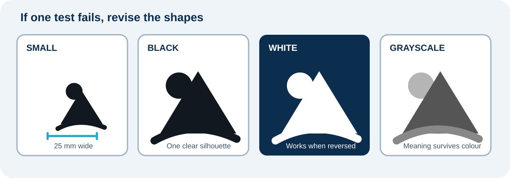
- Small: is it recognizable at about 25 mm wide?
- Black: does the silhouette still work?
- White: does it work on a dark background?
- Grayscale: does the idea survive without colour?
If a thin line disappears, thicken it. If a small gap closes, open it. If the mark needs colour to make sense, simplify it.
7. Save the logo system
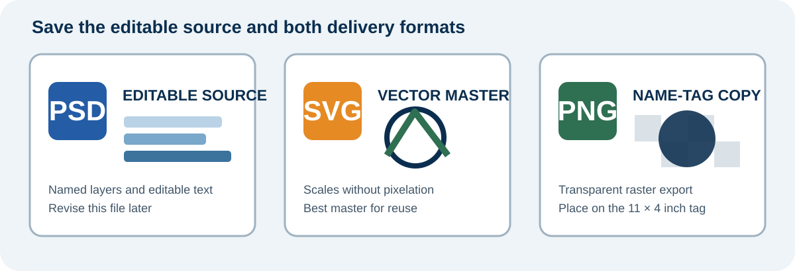
Save:
- editable
lastname-logo-master.psd lastname-logo-colour.svglastname-logo-dark.svglastname-logo-light.svglastname-logo-gray.svg- transparent
lastname-logo.png
Choose File > Export As > SVG for the vector master. Keep the PSD so you can revise it. Export the transparent PNG for the name tag.
Before submitting, reopen both the SVG and PNG in Photopea. Check the shapes, spelling, transparent background, and canvas edges.
Bring the transparent PNG and editable PSD to the Name + Logo engraving worksheet. The name-tag file is built at 11 × 4 inches, not as a pixel-only canvas.
Ontario curriculum relevance: Strongly relevant to TGJ2O Communications Technology and useful in TDJ2O and TIJ1O work involving visual identity, vector graphics, design alternatives, and fabrication.
Next: Name + Logo Wood Name Tag.